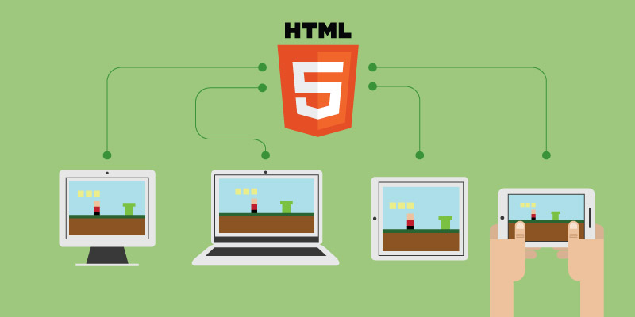

你是否想開發遊戲呢？以下蒐集了一系列介紹影片，讓你能著手開發 HTML 5 遊戲！

圖片來源：http://www.drimlike.com/
使用 HTML 5 的理由
第一支影片解釋「針對 Web 開發遊戲」的幾個理由：作品能突破平台限制，接觸到更多人、自死板的 App 商城中解放、選擇自己愛用的工具與 API 等等。
引擎與函式庫
第二支影片則概述了目前可用以建構遊戲的引擎與函式庫。其中包含完整的 JavaScript 函式庫 (如 Phaser)，以及可匯出至 HTML 5 (如 Unity) 的多平台引擎。
Firefox 開發者工具
接著是實機操作影片，將透過 Firefox 開發者 (Developer) 版本中的開發工具，對遊戲進行除錯與設定作業。即時修改程式碼、因應不同的畫面尺寸調整遊戲、除錯等等，都在這裡！
參加「Game jam」的秘訣
最後是參加某場「Game jam」的訣竅。這類競賽就是要讓你在一個週末的時間內開發遊戲。我 (作者 Belén Albeza) 已經參加過好幾場，而且深知 Game jam 的難度與挑戰之處！希望這些秘訣能幫上忙。
當然，等你寫出了 HTML 5 遊戲，可別忘了說一下。我很想立刻去玩！